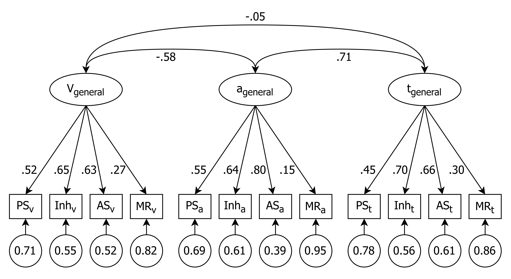
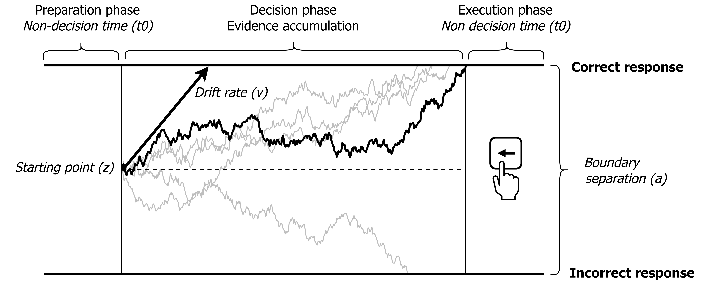
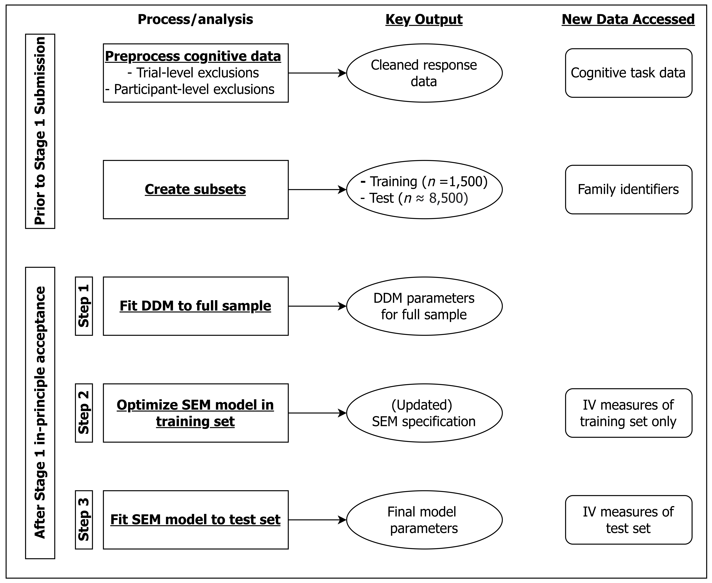

Table 2. Bivariate correlations between DDM parameters and measures of adversity. | ||||||||||||||
|---|---|---|---|---|---|---|---|---|---|---|---|---|---|---|
1 | 2 | 3 | 4 | 5 | 6 | 7 | 8 | 9 | 10 | 11 | 12 | 13 | 14 | |
Drift Rate | ||||||||||||||
1. Flanker | - | |||||||||||||
2. Att. Shift. | 0.43 | - | ||||||||||||
3. Men. Rot. | 0.27 | 0.30 | - | |||||||||||
4. Proc. Speed | 0.31 | 0.39 | 0.19 | - | ||||||||||
Boundary Separation | ||||||||||||||
5. Flanker | -0.28 | -0.12 | -0.08 | -0.12 | - | |||||||||
6. Att. Shift. | -0.40 | -0.36 | -0.14 | -0.26 | 0.47 | - | ||||||||
7. Men. Rot. | 0.00 | 0.01 | 0.29 | -0.05 | 0.06 | 0.09 | - | |||||||
8. Proc. Speed | -0.29 | -0.23 | -0.11 | -0.28 | 0.33 | 0.42 | 0.11 | - | ||||||
Non-Decision Time | ||||||||||||||
9. Flanker | -0.03 | 0.05 | -0.00 | 0.02 | 0.52 | 0.33 | 0.05 | 0.23 | - | |||||
10. Att. Shift. | -0.07 | 0.02 | -0.05 | -0.02 | 0.34 | 0.21 | 0.03 | 0.20 | 0.40 | - | ||||
11. Men. Rot. | 0.15 | 0.21 | 0.27 | 0.12 | 0.08 | 0.01 | 0.14 | 0.04 | 0.19 | 0.16 | - | |||
12. Proc. Speed | -0.07 | -0.02 | -0.07 | 0.01 | 0.26 | 0.20 | 0.02 | 0.12 | 0.28 | 0.30 | 0.16 | - | ||
Adversity | ||||||||||||||
13. Mat. Dep. | -0.19 | -0.23 | -0.21 | -0.11 | 0.06 | 0.14 | -0.08 | 0.11 | -0.00 | 0.00 | -0.14 | -0.02 | - | |
14. Househ. Thr. | -0.12 | -0.15 | -0.10 | -0.10 | 0.02 | 0.06 | -0.03 | 0.07 | -0.03 | -0.02 | -0.08 | -0.02 | 0.26 | - |
Mean | 2.91 | 1.49 | 0.25 | 1.47 | 2.95 | 2.12 | 2.88 | 2.89 | 0.34 | 0.33 | 1.15 | 1.22 | 0.05 | -0.06 |
SD | 0.87 | 0.39 | 0.26 | 0.38 | 0.41 | 0.45 | 0.44 | 0.47 | 0.08 | 0.08 | 0.28 | 0.14 | 1.05 | 0.83 |
Skew | -0.25 | -0.21 | 0.58 | 0.18 | -0.10 | 0.25 | -0.49 | -0.15 | 0.06 | 0.44 | -0.30 | -0.06 | 0.73 | 0.52 |
Kurtosis | -0.28 | 0.05 | 0.02 | -0.18 | 0.53 | -0.13 | 0.28 | -0.36 | -0.41 | -0.21 | 0.35 | 0.03 | 0.11 | -0.57 |
Note: Att. Shift. = Attention Shifting; Men. Rot. = Mental Rotation; Proc. Speed = Processing Speed; Mat. Dep. = Material Deprivation; Househ. Thr. = Household Threat | ||||||||||||||
| ||||||||||||||
Cognitive deficits and enhancements in youth from adverse conditions: An integrative assessment using Drift Diffusion Modeling in the ABCD study
Stefan Vermeent1,2, Ethan S. Young1, Meriah L. DeJoseph3, Anna-Lena Schubert4, & Willem E. Frankenhuis1,2,5
1 Department of Psychology, Utrecht University, Utrecht, The Netherlands
2 Max Planck Institute for the Study of Crime, Security, and Law, Freiburg, Germany
3 Institute of Child Development, University of Minnesota, USA
4 Department of Psychology, University of Mainz, Mainz, Germany
5 Evolutionary and Population Biology, Institute for Biodiversity and Ecosystem Dynamics, University of Amsterdam, Amsterdam, the Netherlands
Data Availability
All scripts and materials needed to reproduce the findings are available on the article’s Github repository (https://anonymous.4open.science/r/anon-255D/README.md). We also include instructions on how to reproduce each step of our analyses. To ensure computational reproducibility, we provide synthetic (i.e., simulated) data files with the same characteristics as the raw data. The raw data supporting the findings of this study will be made available upon after Stage 2 via https://doi.org/10.15154/1528297.
Data used in the preparation of this article were obtained from the Adolescent Brain Cognitive DevelopmentSM (ABCD) Study (https://abcdstudy.org), held in the NIMH Data Archive (NDA). This is a multisite, longitudinal study designed to recruit more than 10,000 children age 9-10 and follow them over 10 years into early adulthood. The ABCD Study® is supported by the National Institutes of Health and additional federal partners under award numbers U01DA041048, U01DA050989, U01DA051016, U01DA041022, U01DA051018, U01DA051037, U01DA050987, U01DA041174, U01DA041106, U01DA041117, U01DA041028, U01DA041134, U01DA050988, U01DA051039, U01DA041156, U01DA041025, U01DA041120, U01DA051038, U01DA041148, U01DA041093, U01DA041089, U24DA041123, U24DA041147. A full list of supporters is available at https://abcdstudy.org/federal-partners.html. A listing of participating sites and a complete listing of the study investigators can be found at https://abcdstudy.org/consortium_members/. ABCD consortium investigators designed and implemented the study and/or provided data but did not necessarily participate in the analysis or writing of this report. This manuscript reflects the views of the authors and may not reflect the opinions or views of the NIH or ABCD consortium investigators. The ABCD data repository grows and changes over time. The ABCD data used in this report came from Data Release 4.0 (DOI: http://dx.doi.org/10.15154/1523041).
Funding Statement
WEF’s contributions have been supported by the Dutch Research Council (V1.Vidi.195.130) and the James S. McDonnell Foundation (https://doi.org/10.37717/220020502).
Disclosures
We declare no conflicts of interest.
Ethics Approval Statement
This study was approved by the Ethics Review Board of the Faculty of Social & Behavioural Sciences of Utrecht University (FETC20-490).
Proposal Research Highlights
- We use Drift Diffusion Modeling (DDM) to investigate how two forms of early-life adversity—material deprivation and household threat—are associated with lowered or improved cognitive performance.
- The DDM can inform us if and where cognitive differences occur along distinct stages of cognitive processing.
- We will also use structural equation modeling and out-of-sample validation to tease apart effects of adversity that are task-specific versus task-general.
- We will apply our approach to a large, representative sample of around 10,000 9- to 10 year-olds from the ABCD study.
Proposal Abstract
Childhood adversity can lead to cognitive deficits or enhancements, depending on many factors. Though progress has been made, two challenges prevent us from integrating and better understanding these findings. First, studies commonly use and interpret raw performance differences, such as mean response times or overall accuracy. However, raw scores conflate different stages of cognitive processing. Second, studies tend to either isolate or aggregate abilities, obscuring the degree to which individual differences reflect task-specific or task-general processes. We address these challenges using Drift Diffusion Modeling (DDM) and structural equation modeling. Combining these techniques, we can (1) relate early-life adverse experiences to individual differences in different stages of processing, and (2) investigate whether these reflect differences in specific or task-general performance. We examine how two forms of adversity—material deprivation and household threat—affect performance on four cognitive tasks in a large, representative sample of 9-10 year-olds from the Adolescent Brain Cognitive Development (ABCD) study. This approach holds promise for both deficit- and strength-based research questions. It will add much-needed nuance to adversity-related performance differences, which can inform theory and intervention.
Keywords: adversity, cognitive deficits, cognitive enhancements, drift diffusion modeling, Adolescent Brain Cognitive Development (ABCD) Study
Cognitive deficits and enhancements in youth from adverse conditions: An integrative assessment using Drift Diffusion Modeling in the ABCD study
The effects of early-life adversity—such as growing up in poverty or experiencing high levels of violence—on cognition are complex. There is a growing consensus that adversity-exposed youth may develop not only deficits, but also strengths. For example, studies find lowered and improved performance across different cognitive domains including (but not limited to) executive functioning, social cognition, language, and emotion (Ellis et al., 2022; Frankenhuis et al., 2016; Frankenhuis & Weerth, 2013; Sheridan et al., 2022; Sheridan & McLaughlin, 2014). Researchers focused on one type of effect or another acknowledge the importance of identifying both deficits and strengths. Yet, in practice, they often focus on one at the expense of the other. To develop an integrated, well-rounded, and nuanced understanding of how adversity shapes cognitive abilities, research must integrate both types of effects.
Such an integration of deficit- and strength-based approaches is hampered by two methodological challenges. First, most cognitive tasks involve different stages of processing which are obscured when analyzing raw performance differences. This makes it difficult to understand why cognitive performance may be lowered or improved. Second, adversity may lower or improve performance because it affects general processes (i.e., processes shared across many tasks) or abilities that are task-specific. In this Registered Report, we use a framework that tackles both challenges. First, we decompose raw performance into measures of different stages of cognitive processes through cognitive modeling. Second, we analyze four different tasks—tapping processing speed, attention shifting, inhibition, and mental rotation—all of which have documented associations with adversity. Finally, we model shared (i.e., task-general) and unique (i.e., task-specific) factors that drive performance and investigate how they are associated with adversity.
What do deficit and enhancement patterns mean?
Both the deficit and strength-based literature often use speeded tasks, in which participants are usually instructed to respond as fast and accurate as possible. For example, performing well on inhibition tasks (e.g., Flanker task, Go/No-Go Task; Farah et al., 2006; Fields et al., 2021; Mezzacappa, 2004; Noble et al., 2005), attention shifting tasks (e.g., Dimensional Change Card Sort; Farah et al., 2006; Fields et al., 2021; Mittal et al., 2015; Noble et al., 2005; Nweze et al., 2021; Young et al., 2022), and stimulus detection tasks (Farah et al., 2006; Noble et al., 2005; Pollak, 2008) requires fast and accurate responses. In practice, performance is often quantified using aggregated indices of speed alone (e.g., RT), accuracy alone (e.g., proportion correct), or both independently (rather than in an integrated manner).
In both the deficit and strength-based literature, task performance (indexed by mean RTs or accuracy) is routinely equated with cognitive ability. For example, deficit-focused studies relate slower RTs on inhibition tasks to worse inhibition ability (Farah et al., 2006; Fields et al., 2021; Mezzacappa, 2004; Noble et al., 2005). Strength-based studies relate faster RTs on standard attention shifting tasks to better shifting ability (Fields et al., 2021; Mittal et al., 2015; Young et al., 2022). However, speed and accuracy comprise more than pure ability (e.g., inhibition, attention shifting). They also measure other constructs such as response caution (e.g., more or less cautious responding), speed of task preparation (e.g., orienting attention, encoding information), and speed of response execution. This heterogeneity creates an inferential risk, namely, if performance differences are interpreted as differences in abilities without sufficiently considering alternative explanations. In addition, the effect of adversity exposure may not be limited to a single process. For example, a specific type of adversity could affect both the speed of information processing and also shape the strategy that a person uses. These inferential challenges have real-world implications, especially when raw performance is used as an early screening tool to assess cognitive abilities (Distefano et al., 2021).
One promising solution to these issues is leveraging cognitive measurement models developed by mathematical psychologists. For speeded binary decision tasks, a well-established measurement model is the Drift Diffusion Model (DDM; Forstmann et al., 2016; Ratcliff & McKoon, 2008; Ratcliff & Rouder, 1998; Wagenmakers, 2009). The DDM integrates speed and accuracy on a trial-by-trial level to estimate cognitive processes at different stages of the decision-making process. The DDM assumes that people go through three distinct phases on each trial (see Figure 1 for a visualization). The first phase, preparation, includes processes such as focusing attention and visually encoding the stimulus. In the second phase, decision-making, people gather evidence for both response options until the evidence sufficiently favors one option over the other (explained below) and the decision process terminates. The third phase, execution, involves preparing and executing the motor response corresponding to the choice.
[Figure 1 about here]
DDM estimates a set of parameters1 for each participant that represent each phase of the decision process (Voss et al., 2004). The drift rate (v) represents the speed of information uptake (Schmiedek et al., 2007; Voss et al., 2013). People with a higher drift rate are faster and make fewer errors. The non-decision time (t0) includes initial preparatory processes (e.g., visually encoding the stimulus) and processes after the decision is made (e.g., pressing a button). All else being equal, longer non-decision times reflect slower information processing but without a cost nor benefit in accuracy. The boundary separation (a) represents the distance between the two decision boundaries. A larger boundary separation means more information is collected before making a decision. Thus, boundary separation measures response caution. In contrast to non-decision time, larger boundary separation leads to slower but more accurate responses, reflecting a speed-accuracy tradeoff.
As mentioned earlier, adversity-related raw performance differences—both lowered and improved performance—are typically interpreted as differences in ability (e.g., inhibition, attention shifting). If these interpretations are accurate, then drift rate would reflect these variations. That is because improved ability would result in both decreased RTs and increased accuracy. However, if performance differences arise through other factors—such as differences in response caution or response speed—they would be captured by parameters other than the drift rate. Thus, disentangling the drift rate, non-decision time, and boundary separation enhances our understanding of how adversity-exposure is associated with performance.
Are deficit and enhancement patterns task-specific or task-general?
An important caveat to interpreting task performance on any task in isolation is that performance on most tasks relies both on shared cognitive processes and unique abilities. For example, RTs on executive functioning tasks are substantially confounded with general processing efficiency (Frischkorn et al., 2019; Lerche et al., 2020; Löffler et al., 2022). Both task-specific abilities and task-general processes affect RTs and accuracy in similar ways and are thus likely confounded in drift rates. Task-general effects create the illusion that many different abilities are affected by adversity when in fact only one more general process is affected. Consider research on cognitive deficits. Adversity exposure might disrupt general cognitive processes shared across many tasks, such as general processing speed, for example, because of its effects on brain regions that are involved across several cognitive abilities (Sheridan & McLaughlin, 2014). If so, studies analyzing raw Flanker performance in isolation will find processing speed deficits but wrongly interpret this as an inhibition deficit. Such distinctions matter for both deficit- and strength-based approaches (e.g., does adversity impair broad domains such as executive functioning? Does it enhance specific abilities such as attention shifting?), as well as for real-world interventions grounded in both approaches (e.g., school-based interventions targeting broad domains or specific abilities).
Structural equation modeling (SEM) can disentangle task-general and task-specific processes. For example, it can estimate shared task variance with latent task-general variables. By estimating shared variance across different tasks, we can also obtain more precise estimates of task-specific abilities (i.e., variance unique to specific tasks). Bignardi et al. (2022) recently applied this approach to model how SES is related to standard performance measures in three large data sets. They used SEM to model the effect of SES on a general factor and task-specific residual variances. Lower SES was associated with a lower general ability, but enhanced task-specific processing speed, inhibition, and attention shifting. However, their analysis looked at shared and unique variance using raw performance measures. Thus, it is subject to the same limitations outlined in the previous section.
The current study
Here, we analyzed the Adolescent Brain Cognitive Development (ABCD) study data (http://abcdstudy.org). The ABCD study is ideal because it provides a large, representative, and socioeconomically and ethnically diverse sample of 9- to 10 year-olds–—an age range characterized by rapid growth in cognitive abilities (Blakemore & Choudhury, 2006).
We studied two dimensions of adversity: household threat and material deprivation. These forms of adversity have been widely studied in their relation to cognitive outcomes—from both deficit and strength-based perspectives (Fields et al., 2021; Schäfer et al., 2022; Sheridan et al., 2022; Young et al., 2022)—and are central to contemporary conceptualizations of adversity (e.g., McLaughlin et al., 2021; Sheridan & McLaughlin, 2014). Prior work has shown that cognitive deprivation is more strongly associated with lower cognitive performance than threat exposure (Salhi et al., 2021; Sheridan et al., 2020). Although material deprivation (as measured here) and cognitive deprivation (in previous studies) are not identical, both seem related to access to resources that support cognitive development (e.g., books in the home, formal education). Indeed, in the ABCD sample material deprivation is highly or moderately correlated with income (-.81) and education (-.56), while correlations with household threat are lower (-.25 and -.12, respectively; DeJoseph et al., 2022). Therefore, to the extent that the deprivation-versus-threat literature has captured ability-relevant processes, we may expect material deprivation to be more strongly associated with lower drift rates than threat exposure.
We analyzed four cognitive abilities that have been studied in relation to adversity. We included attention shifting because previous work has reported enhancement of this ability in children and (young) adults with more exposure to environmental unpredictability (based on raw performance switch costs; Fields et al., 2021; Mittal et al., 2015; Young et al., 2022; but see Nweze et al., 2021). Theoretically, attention shifting is thought to enable people to rapidly adjust to, and take advantage of, a changing environment (e.g., seize fleeting opportunities). We included inhibition because previous research suggests that children with more adverse experiences are worse at inhibiting distracting information (based on raw RT difference scores; Fields et al., 2021; Mezzacappa, 2004; Mittal et al., 2015; Tibu et al., 2016). We included mental rotation because previous studies have found negative associations between SES and mental rotation ability (based on RTs and accuracy; Assari, 2020; Bignardi et al., 2022). To the extent that these performance differences reflect differences in the respective abilities—as they have been interpreted—they should show up in task-specific drift rates. We also included a measure of processing speed, which was not measured in relation to adversity but provided a direct measure of the type of basic processing speed that plays a role in the other tasks. Taken together, the four tasks provideda broad assessment of cognitive domains, which makes them well-suited for isolating task-general processes. As all four tasks adhere to DDM assumptions, we could compare them based on the same model parameters.
Adaptation-based frameworks predict increased task-specific drift rates. This follows from the key assumption that adversity shapes specific abilities, rather than general cognitive processes (Ellis et al., 2022; Frankenhuis et al., 2020; Frankenhuis et al., 2016; Frankenhuis & Weerth, 2013). Task-specific enhancement in the attention-shifting drift rate would align with this assumption, as this ability is thought to be adaptive in changing environments; but enhancement in the task-general drift rate would not. One study reports evidence suggesting that exposure to threat but not deprivation is associated with better attention shifting (Young et al., 2022). If so, we should expect to see higher task-specific drift rates with household threat, but not with material deprivation. Enhanced task-specific drift rates on inhibition and mental rotation would be unexpected yet interesting. It would constitute novel documentation of enhancements, and would suggest that lowered raw performance reflects ability-irrelevant processes. Finally, equivalent drift rates across adversity levels would also not be consistent with strength-based frameworks; rather, such a pattern would suggest that abilities are intact (i.e., not affected by adversity).
Deficit perspectives can accommodate both lowered task-specific and lowered task-general drift rates. On the one hand, past work suggests that adversity impairs specific abilities (e.g., inhibition; Farah et al., 2006; Fields et al., 2021; Mezzacappa, 2004; Mittal et al., 2015). On the other hand, there is also evidence that adversity affects general cognitive ability (Bignardi et al., 2022)—perhaps through its broad effects on brain regions that are involved across several cognitive abilities (Sheridan & McLaughlin, 2014). However, equivalent or enhanced drift rates, whether they be task-specific or task-general, would not be consistent with deficit perspectives; rather, this would suggest that abilities are intact or enhanced.
Our approach adds value in a third way besides separating drift rate from ability-irrelevant factors and isolating task-specific and task-general effects: It allows us to quantify cognitive deficits and enhancements separately within the same model. This is because the task-specific and task-general estimates are statistically independent. Thus, for instance, we may find that adversity lowers general drift rate, as well as some task-specific drift rate (e.g., capturing inhibition), but increases other task-specific drift rates (e.g., capturing attention shifting).
If the drift rates we observe align with previous interpretations of performance differences as outlined above, our findings support existing theories about deficits and enhancements. However, if not drift rates, but non-decision time or boundary separation account for the existing findings, and drift rates do not, neither deficit- or adaptation-based frameworks are supported. This would at a minimum invite reflection—perhaps revision—of the evidence base for (parts of) these frameworks. At the same time, such findings would offer clear directions for future research in this field (e.g., which factors explain variation in non-decision times and/or boundary separation across levels of adversity). Thus, regardless of the specific pattern of outcomes, our analyses contribute to an accurate and refined understanding of how early-life adversity shapes cognitive abilities.
Methods
Sample
The ABCD study (http://abcdstudy.org), is a prospective, longitudinal study of approximately 12,000 youth across the United States. We focused on the baseline assessment, which has the largest collection of cognitive tasks suitable for DDM (Luciana et al., 2018). There were four tasks: (1) Processing Speed Task (Pattern Comparison Processing Speed Task), (2) Attention Shifting Task (Dimensional Change Card Sort Task), (3) Inhibition Task (Flanker Task), and (4) Mental Rotation Task (Little Man Task). At baseline, the study included 11,878 youths (aged between 9 and 10 years old, measured in months) recruited across 21 sites. The study used multi-stage probability sampling to obtain a nationally representative sample (Heeringa et al., 2010). Baseline assessments were completed between September 1st 2016 and August 31st 2018 (see Garavan et al., 2018). Our analysis sample includes 10,687 participants who had trial-level data available on all four2 cognitive tasks. We will provide descriptive statistics of the youth included in the final sample (i.e., age, income-to-needs ratio, parent education level, ethnicity) in Stage 2 of this Registered Reports submission.
Open Science Statement
All analysis scripts, materials, and instructions needed to reproduce the findings are available on the article’s Github repository (https://anonymous.4open.science/r/anon-255D/README.md). The raw study data cannot be shared on public repositories. Personal access to the ABCD dataset is required to fully reproduce our analyses and can be requested at https://nda.nih.gov.
We obtained access to the full ABCD data repository and performed initial data cleaning and analyses prior to Stage 1 submission. However, we preprocessed cognitive task data in isolation to prevent biasing the analyses involving independent variables. The goal of these analyses was to assure that the pre-selected cognitive tasks adhered to basic DDM assumptions and had the required trial-level data available in the right format. These initial analyses were preregistered (https://anonymous.4open.science/r/anon-255D/preregistrations/2022-09-20_preregistration_DDM.md).
To increase transparency, we developed an automated workflow (using R and Git) to track the data files read into the analysis environment. First-time access to any data file was automatically tracked via Git, providing an overview including the timestamp, a description of the data, and the R code that was used to read in the data. The supplemental materials provide a detailed description and visual overview of this workflow. An overview of the data access history is provided in the repository’s README file (https://anonymous.4open.science/r/anon-255D/README.md).
Exclusion Criteria
For the cognitive task data, we applied exclusion criteria in two steps: first, cleaning trial-level data, and second, removing participants with problematic trial-level data (discussed below). For both, most criteria were as preregistered, but a few deviated from or were additional to the preregistration. The data processing steps described below were preregistered unless noted otherwise.
First, we removed RTs of the Attention Shifting, Flanker, and Mental Rotation Tasks that exceeded maximum task-specific RT thresholds (> 10 seconds (0.07%), > 10 seconds (0.04%), and > 5 seconds (< 0.01% of trials), respectively). The Processing Speed Task did not have a programmed time-out. Instead, we cut-off responses > 10 seconds (0.15% of trials) to remove extreme outliers. This step was not preregistered as we did not anticipate these extreme outliers.
Next, we removed trials with: (1) RTs < 300 ms (ranging from 0.01% to 1.03% of trials across tasks); (2) RTs > 3 SD above the participant-level average log-transformed mean RT (ranging from 0.02% to 0.85% of trials across tasks; the same thing was done for RTs < 3 SD on the Processing Speed Task (not preregistered) to remove several fast outliers); (3) trials with missing response times and/or accuracy data (< 0.01% for all tasks except Mental Rotation). We found that the response time-out of 5 seconds on the Mental Rotation Task led to missing responses on 10.55% of trials. This truncated the right-hand tail of the RT distribution, which can bias DDM estimation. Therefore, we decided to impute these values during DDM estimation instead of removing them (see the Supplemental materials for more information).
Next, we excluded participants who (1) had suffered possible mild traumatic brain injury or worse (n = 118); (2) showed a response bias of > 80% on a task (ranging between zero and 212; deviating from the preregistration); (3) had a low number of trials left after trial-level exclusions, defined as < 20 trials for Mental Rotation and Attention Shifting (n = zero and 19, respectively) and < 15 trials for Flanker and Processing Speed (n = 64 and 34, respectively, deviating from the preregistration). Finally, we excluded task data of several participants based on data inspection (not preregistered): two participant with 0% accuracy on the Mental Rotation Task; two participants who showed a sharp decline in accuracy over time on the Processing Speed Task; 49 participants on the Attention Shifting Task who (almost) only made switches across all trials, even on repeat trials. We also decided to include participants with missing data on one or more tasks because our main analyses will use FIML for missing data.
The final sample consisted of 10,563 participants.
Measures
Cognitive Tasks
Flanker Task. The NIH Toolbox Flanker task is a measure of cognitive control and attention (Zelazo et al., 2014). On each trial, participants saw five arrows that were positioned side-by-side. The four flanking arrows always pointed in the same direction, either left or right. The central arrow either pointed in the same direction (congruent trials) or in the opposite direction (incongruent trials). Participants were instructed to always ignore the flanking arrows and to indicate whether the central arrow is pointing left or right. After four practice trials, participants completed 20 test trials, of which 12 were congruent (MeanRT = 0.84 seconds, SD = 0.28) and eight were incongruent (MeanRT = 1.02 seconds, SD = 0.44). The standard outcome measure is a normative composite of accuracy and RT. For more information on the exact calculation, see Slotkin et al. (2012).
Processing Speed Task. The NIH Toolbox Pattern Comparison Processing Speed task (Carlozzi et al., 2015) is a measure of visual processing. On each trial, participants saw two images and judged whether the images were the same or different. When images were different, they varied on one of three dimensions: color, adding or taking something away, or containing more or less of a particular item. The standard outcome measure is the number of items answered correctly in 90 seconds (normalized). On average, participants completed 38.96 trials (MeanRT = 2.24 seconds, SD = 0.47).
Attention Shifting Task. The NIH Toolbox Dimensional Change Card Sort Task is a measure of attention shifting or cognitive flexibility (Zelazo et al., 2014; Zelazo, 2006). A white rabbit and green boat were presented at the bottom of the screen. Participants matched a third object to the rabbit or boat based on either color or shape. After eight practice trials, participants completed 30 test trials alternating between shape and color in pseudo-random order. Of these, 23 were repeat trials (i.e., the sorting rule was the same as on the previous trial; MeanRT = 1 seconds, SD = 0.36) and 7 were switch trials (i.e., the sorting rule was different than on the previous trial; MeanRT = 1.03 seconds, SD = 0.39). The standard outcome measure is a normative composite of accuracy and RT. For more information on the exact calculation, see Slotkin et al. (2012).
Mental Rotation Task. The Little Man task (referred to in this article as the Mental Rotation task) is a measure of visual-spatial processing (Luciana et al., 2018). Participants saw a simple picture of a male figure holding a briefcase in his left or right hand. They had to indicate whether the briefcase was in the left or right hand. The image could have one of four orientations: right side up or upside down, and facing towards or away from the participant. Thus, on half of the trials, participants had to mentally rotate the image in order to make the decision. Participants first completed three practice trials and then completed 32 test trials (MeanRT = 2.65, SD = 0.47). The standard outcome measure is an efficiency measure, calculated as the percentage correct divided by the average RT.
Adversity measures
Material deprivation. We assessed material deprivation with seven items from the parent-reported ABCD Demographics Questionnaire. These items originate from the Parent-Reported Financial Adversity Questionnaire (Diemer et al., 2013). The items assess whether or not (1 = Yes, 0 = No) the youth’s family experienced several economic hardships over the 12 months prior to the assessment (e.g., ‘Needed food but couldn’t afford to buy it or couldn’t afford to go out to get it’).
We used a previously created factor score of this measure derived from MNLFA (Bauer, 2017). This score empirically adjusts for measurement non-invariance across sociodemographic characteristics and creates person-specific factor scores that enhance measurement precision and individual variation (Curran et al., 2014). In short, MNLFA scores assume a common scale of measurement across groups and age, as well as adjust for measurement biases that would have otherwise biased our substantive analyses. DeJoseph et al. (2022) describe how this score was computed. Higher scores indicate more material deprivation.
Household threat. We assessed threat experienced in the youth’s home using the Family Conflict subscale of the ABCD Family Environment Scale (Moos, 1994; Zucker et al., 2018). The subscale consisted of nine items assessing conflict with family members (e.g., ‘We fight a lot in our family’). Items were endorsed with either 1 (True) or 0 (False). Two items are positively valenced and will therefore be reverse-scored. Similar to material deprivation, we used a previously-created factor score of this measure derived from MNLFA (DeJoseph et al., 2022). Higher scores indicate more threat exposure.
Sociodemographic covariates. Several sociodemographic covariates were included in the SEM models (see Planned Main Analyses) that use the MNLFA scores representing material deprivation and household threat exposure. This is because MNLFA scores are adjusted for these covariates. Thus, it is recommended that variation in these covariates is also adjusted for in dependent variables (Bauer, 2017).
We calculated income-to-needs ratios by first taking the average of each binned income (< $5000, $5,000–$11,999, $12,000–$15,999, $16,000–$24,999, $25,000–$34,999, $35,000–$49,999, $50,000–$74,999, $75,000–$99,999, $100,000–$199,999, ≥ $200,000) as a rough approximation of the family’s total reported income. Then we divided income by the federal poverty threshold for the year at which a family was interviewed (range = $12,486–$50,681), adjusted for the number of persons in the home. We used highest education (in years) out of the two caregivers (or one if a second caregiver was not provided) as a continuous variable. We collapsed youth race into 4 levels (White, Black, Hispanic, Other) and subsequently dummy-coded with White (the most numerous racial group) serving as the reference category in all models. We dichotomized youth sex such that 1 = Female and 0 = Male. We used youth age (in months) as a continuous variable and centered on the mean.
Proposed Analysis Pipeline
Planned main analyses
Before conducting analyses, we split the full sample up in a training set (n = 1,500) and a test set (n ≈ 8,500). We conducted our main analyses in three steps (each discussed in more detail below): (1) fitting the DDM to the cognitive task data; (2) fitting the SEM model to the adversity and DDM data and optimize it where necessary based on the training set; (3) Refitting the model to the test data and interpret the regression coefficients. We conducted a simulation-based power analysis based on the main SEM model (see Figure 3), with standardized regression coefficients of 0.06, 0.08 and 0.1 and the alpha level set to .05. The analysis indicated that we would have more than 90% power for all regression paths with N between 2,500 (\(\beta\) = 0.1) and 6,500 (\(\beta\) = 0.06).
All analyses were conducted in R 4.2.1 (Team, 2022). The source code can be found on the Github repository (https://anonymous.4open.science/r/anon-255D/scripts).
[Figure 2 about here]
Step 1: DDM estimation. The DDM was fit to each cognitive task in a hierarchical Bayesian framework which estimates DDM parameters both on the individual and group level (Vandekerckhove et al., 2011; Wiecki et al., 2013). We use code provided by Johnson et al. (2017). The benefit of this approach is that group-level information is leveraged to estimate individual-level estimates. This differs from classic DDM estimation approaches where the model is fitted to the data of each participant separately (Voss et al., 2013). This is particularly useful in developmental samples like the ABCD dataset which have a limited number of trials per participant but substantially larger sample sizes than is typical in the DDM literature3.
All models freely estimated the drift rate, non-decision time, and boundary separation while constraining response bias to 0.5 (i.e., assuming no bias towards a particular response option). For the Flanker and Attention Shifting Task, we compared model versions that separately estimate drift rate and non-decision-time per task condition or collapsed across conditions. Boundary separation was constrained to be the same across conditions. For the Processing Speed Task and the Mental Rotation Task, we estimated DDM parameters across all trials. The best-fitting model of each task was used to estimate participant-level DDM parameters. See the supplement for more information about model fitting procedures.
Step 2: Model optimization in training set. We first estimated and (where necessary) optimized the SEM in the training set using the lavaan package (Rosseel, 2012). This goal of this step was to investigate whether we needed to adjust the model specification in any way (e.g., add residual correlations, introduce or reduce constraints of factor loadings, etc.) to achieve good model fit. For this reason, the model fitted in this step was not interpreted to address our research aims.
See Figure 3 for the a-priori specification of the model. In the measurement model, all three DDM parameters across all tasks (i.e., drift rates, non-decision times, and boundary separations) loaded on separate latent factors for each parameter type. Unique (residual) variances of the manifest (i.e., measured) DDM parameters were captured in additional latent factors (one per parameter). The structural model estimated regression paths going from each adversity measure (see Adversity measures) to the general latent factors and to the unique variances of the DDM parameters of each task. For model identification reasons, we did not estimate regression paths to the unique variances of the Processing Speed Task. We first estimated and optimized the measurement models separately for each diffusion model parameter, which allowed us to efficiently detect sources of potential badness of fit. Once measurement models provided an adequate account of the data, we integrated them into the structural model shown in Figure 3. In addition, clustering of siblings and twins within families was accounted for using the lavaan.survey package (Oberski, 2014). Finally, the sociodemographic covariates that were included in the MNLFA scores (see Measures section above) were controlled for in the SEM. Goodness-of-fit was assessed using the root mean square error of approximation (RMSEA) and the comparative fit index (CFI). Following Hu & Bentler (1999), CFI values > .90 and RMSEA values < .08 were interpreted as acceptable model fit and CFI values > .95 and RMSEA values ≤ .06 as good model fit.
[Figure 3 about here]
Step 3: Model validation in test set. After optimizing the model based on the training set, we refit it to the test data. Model fit was assessed the same way as at Step 2. The regression coefficients of these models were interpreted to address our research questions. We controlled for multiple testing in the regression paths based on the false discovery rate (Benjamini & Hochberg, 1995; Cribbie, 2007). We did so separately for tests involving drift rates, non-decision times, and boundary separations, as we had different hypotheses for each of these parameters. In addition, we were interested in determining if standardized effects that fell between -.10 and .10 were consistent with an actual null effect. For regression coefficients falling within these bounds, we therefore used two one-sided tests (TOST) equivalence testing using -.10 and .10 as bounds.
Results
Model fit
DDM
Based on a model fit assessment, we selected the following good-fitting DDM models for the substantive analysis: 1) Mental Rotation Task, the base model with imputed RTs; 2) Flanker Task, the model with one set of parameter estimates across conditions; 3) Attention Shifting Task, the model with one set of parameter estimates across conditions; 4) Processing Speed Task, the base model, but with RTs < 1 s excluded to solve issues with fast outliers. See the supplemental materials for a full overview of the DDM fitting results.
Our model fit procedure deviated from the preregistered plan by simulating 100 trials instead of the same number of trials as the participants. As the number of trials for each task was low, simulating the same number of trials led to a very low number of data points at each RT quantile. While we increased the number of simulated trials, the real data still only had a low number of data points at each quantile. The fact that correlations for both RTs and accuracy were high across all tasks (all ≥ .79, with many >.90) increased our confidence that the estimates were reliable, and that further changes were unnecessary. The supplemental materials present model fit results for both the preregistered approach and the updated approach.
Table 1 shows bivariate correlations between DDM parameters and adversity measures. Both material deprivation and household threat showed small, negative associations with drift rates across all four tasks, suggesting that participants with more adversity exposure processed information more slowly. In addition, both material deprivation and household threat tended to be positively associated with boundary separation (indicating more response caution, except for Mental Rotation), although most correlations were very small. Finally, material deprivation and household threat showed a small, negative correlation with non-decision times on the Mental Rotation Task, but not with non-decision times on the other tasks.
SEM
The SEM model was incrementally constructed in the training data in order to detect any parts that might need adjustments. All parts of the model provided an acceptable to good account of the training data (full training model: CFI = .979, RMSEA = .049). Therefore, we did not make any adjustments to the model before applying it to the test data (N = 9063). The full model also provided a good account of the test data (CFI = .975, RMSEA = .055).
Figure 4 presents a simplified overview of the measurement part of the final model in the test data (excluding task-specific covariances and regression paths). The factor loadings of the Mental Rotation Task were low for all DDM parameters, suggesting that performance on this task differs substantially from performance on the other tasks. All tasks showed a statistically significant portion of task-specific variance after accounting for task-general effects. Task-general drift rate and task-general boundary separation were negatively correlated (r = -0.57). Task-general boundary separation and task-general non-decision time were positively correlated (r = .71). Task-specific correlations between DDM parameters of the same tasks ranged between r = .02 and r = .34.

Primary analysis
Our primary analysis examined to what extent household threat and material deprivation were associated with task-specific and task-general aspects of speed of information processing (drift rates), response caution (boundary-separations), and task preparation/execution (non-decision times). Task-general effects capture variance that is shared across tasks, whereas task-specific effects capture variance that is unique to specific tasks. The results are summarized in Figure 4.

*** p < .001, ** p < .01, * p < .05
For household threat, we found a significant, negative association with task-general drift rate (\(\beta\) = -0.12, 95% CI = [-0.16, -0.08], p <.001), indicating that participants with more exposure to household threat processed information more slowly in general. All task-specific drift rates were practically equivalent at different levels of household threat. We also found a significant, positive association between household threat and task-general boundary separation (\(\beta\) = 0.08, 95% CI = [0.04, 0.12], p <.001), indicating that participants with more exposure to household threat generally responded with more caution. In contrast, we found a negative association between household threat and task-specific boundary separation on the Attention Shifting Task (\(\beta\) = -0.07, 95% CI = [-0.11, -0.02], p = .013), indicating that participants with more exposure to household threat responded with less caution. The association between household threat and task-specific boundary separation on the Flanker Task was also significant, but fell in the region of practical equivalence. Both task-general non-decision time and task-specific non-decision times were practically equivalent at different levels of household threat.
For material deprivation, the associations with task-general drift rate, as well as with all task-specific drift rates, were not significantly different from zero. We found evidence for practical equivalence for task-general drift rate and the task-specific drift rates of the Flanker Task and the Mental Rotation Task. However, we did not find evidence for practical equivalence for the task-specific drift rate of Attention Shifting, suggesting that participants with higher levels of material deprivation might be somewhat slower at shifting attention. the association between material deprivation and task-general boundary separation was not significantly different from zero (\(\beta\) = 0.07, 95% CI = [-0.00, 0.13], p = .091), although we also did not find evidence for practical significance. Thus, participants with more exposure to material deprivation might generally respond with somewhat more caution. All of the task-specific boundary separations were practically equivalent at different levels of material deprivation. Both task-general non-decision time and task-specific non-decision times were practically equivalent at different levels of material deprivation.
Taken together, we did not find task-specific enhanced abilities in line with adaptation-based frameworks. Our finding of a negative association between household threat and task-general drift rate was in line with the deficit framework, as was the negative association between material deprivation and the task-specific drift rate of the Attention Shifting Task (although the evidence for this association was mixed). However, all other task-specific drift rates were practically equivalent at different levels of adversity, which is not in line with either framework. In addition, we found differences in boundary separation both on a task-general and task-specific level, which leads to performance differences that are unrelated to ability.
Exploratory analysis
To contextualize our primary, preregistered findings, we decided to run additional exploratory models in the test data that analyzed the associations between adversity and traditional, raw performance measures of the four cognitive tasks. We used the measures as provided in the ABCD database (Luciana et al., 2018). For the Processing Speed Task, the traditional raw measure is the number of correctly completed trials. For the Mental Rotation Task, the traditional raw measure is the percentage correct divided by the mean response time on correct trials. For the Attention Shifting and Flanker Task, the traditional raw measure is a composite of accuracy and RT (Slotkin et al., 2012). Per task, we ran a linear regression model including the traditional outcome measure as the dependent variable, and including as independent variables the MNLFA-corrected material deprivation and household threat measures, as well as the covariates used in calculating the MNLFA scores (age (in months, centered), sex (dummy-coded), ethnicity (dummy-coded, with “white” as the reference category), and highest parental education).
Household threat was significantly negatively associated with raw performance on the Processing Speed Task (\(\beta\) = -0.06, 95% CI = [-0.08, -0.04], p <.001) and the Attention Shifting Task (\(\beta\) = -0.06, 95% CI = [-0.08, -0.04], p <.001). Household threat was not associated with raw performance on the Flanker Task (p = .055) and Mental Rotation Task (p = .463). Material deprivation was not significantly associated with any of the tasks (all ps > .066).
Discussion
Our aim was to better understand patterns how adverse experience can lead to enhanced and impaired performance on cognitive tasks. We addressed two common methodological issues. First, traditional raw performance measures—such as response times and accuracy—conflate (at least) three distinct processes: 1) speed of information processing, 2) response caution, and 3) speed of preparation and response execution. This makes it difficult to understand
Main insights
Strengths, limitations, and future directions
Footnotes
1 A fourth DDM parameter,, the starting point (z), represents an initial bias towards one of the two decision options (e.g., a tendency to classify facial expressions as angry that extends to neutral faces). Note that allowing the starting point to vary only makes sense if response options differ in valence (e.g., happy and angry faces, which the current study does not include and thus is unable to examine).
2 The preregistration also included the Picture Vocabulary Task. However, after accessing the data we realized that this task was implemented using computerized adaptive testing (Luciana et al., 2018). This makes it unsuitable for DDM, as the model assumes the level of difficulty is the same across trials.
3 We ran parameter recovery studies simulating the data for the Flanker Task, which has the lowest overall number of trials. Parameter recovery was excellent for the scenario that we plan in our main analyses (all rs ≥ .84). See the supplemental materials for more details.
References

